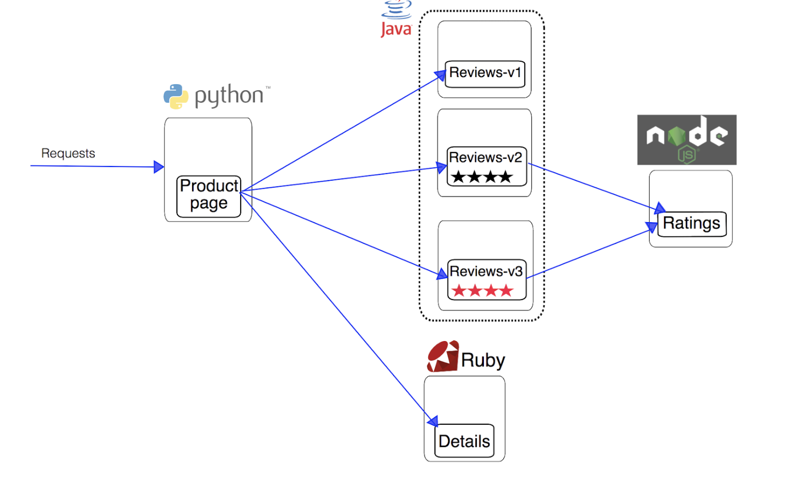
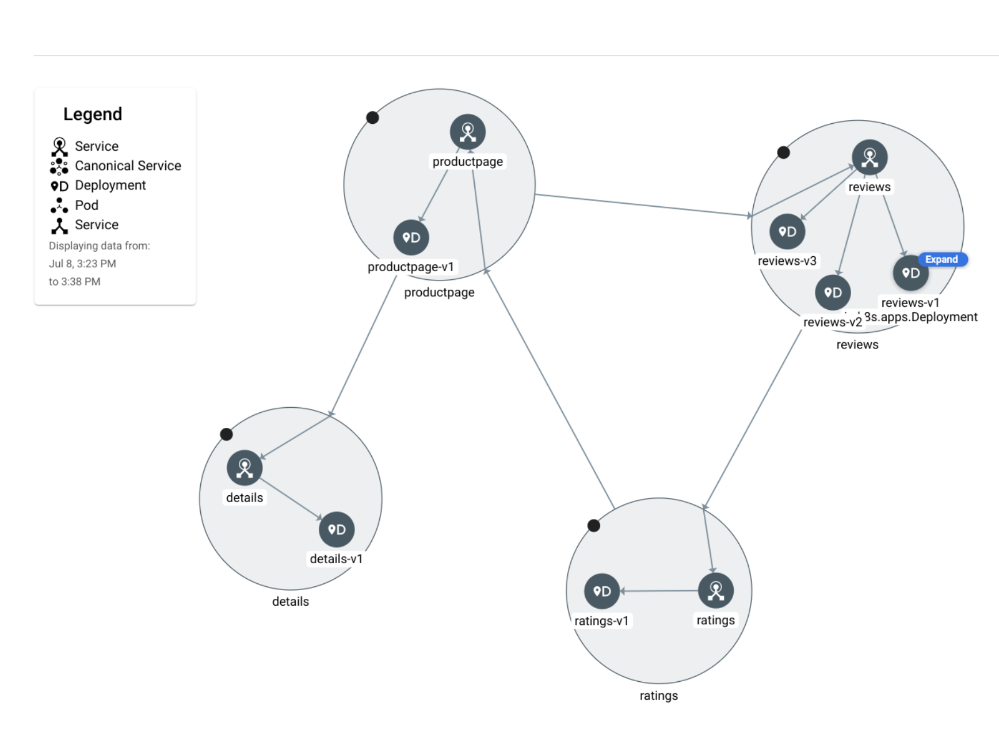

Istio Policies¶
Objective:
- Install Anthos Service Mesh (Managed Istio)
- Deploy bookshelf application and enable anthos proxy sidecar injection
- Deploy Istio policies and verify funcationality
1. Create GKE Cluster on GCP¶
Step 1 Enable the Google Kubernetes Engine API.
gcloud services enable container.googleapis.com \
anthos.googleapis.com container.googleapis.com \
compute.googleapis.com monitoring.googleapis.com \
logging.googleapis.com cloudtrace.googleapis.com \
iamcredentials.googleapis.com
Step 2 Export variable names to be used in the lab
ZONE1=us-central1-b
PROJECT=<PROJECT_ID>
Step 2 From the cloud shell, run the following command to create a cluster with 3 nodes:
gcloud compute networks create default \
--subnet-mode=auto \
--bgp-routing-mode=regional \
--mtu=1460
WORKLOAD_POOL will be used to enable Workload Identity, which is the recommended way to safely access Google Cloud services from GKE applications. MESH_ID will be used to set the mesh_id label on the cluster, which is required for metrics to get displayed on the Anthos Service Mesh Dashboard in the Cloud Console. If no MESH_ID is provided, a deafult ID based on project ID is used for creation
gcloud container clusters create central-gke-cluster \
--project=${PROJECT} --zone=${ZONE1} \
--machine-type=e2-standard-2 --num-nodes=3 \
--scopes=cloud-platform \
--workload-pool=${PROJECT}.svc.id.goog
Modify the cluster admin permissions to your user ID. This will allow the user to install Anthos Service Mesh on to the cluster
kubectl create clusterrolebinding cluster-admin-binding --clusterrole=cluster-admin --user=<USER_EMAIL>
2. Deploy Anthos Service Mesh on the cluster¶
This installation guide install Anthos Service Mesh on the GKE Cluster. Installing ASM triggers a set of managed services to be active on the GCP backend, including the ASM Service Mesh Dashboard.
Google provides a tool, asmcli, which allows you to install or upgrade Anthos Service Mesh. asmcli will configure your project and cluster as follows:
- Grant you the required Identity and Access Management (IAM) permissions on your Google Cloud project.
- Enable the required Google APIs on your Cloud project.
- Set a label on the cluster that identifies the mesh.
- Create a service account that lets data plane components, such as the sidecar proxy, securely access your project's data and resources.
- Register the cluster to the fleet if it isn't already registered.
Download the latest version of Anthos Mesh CLI
curl https://storage.googleapis.com/csm-artifacts/asm/asmcli > asmcli
chmod +x asmcli
Connect to the Anthos Cluster
gcloud container clusters get-credentials central-gke-cluster --zone us-central1-b --project <PROJECT_ID>
Step 2 Run Pre-verification steps on the cluster
./asmcli validate \
--project_id $PROJECT \
--cluster_name central-gke-cluster \
--cluster_location $ZONE1 \
--fleet_id $PROJECT
Note
Please ignore any validation errors as in this case, the validation is confirming that the cluster has all necessary components to install ASM, not that ASM was installed correctly.
Step 3 Install Anthos Service Mesh The following command will install Anthos Service Mesh. The --enable_all flag allows the script to enable the required Google APIs, set Identity and Access Management permissions, and make the required updates to your cluster, which includes enabling GKE Workload Identity:
./asmcli install \
--project_id $PROJECT \
--cluster_name central-gke-cluster \
--cluster_location $ZONE1 \
--fleet_id $PROJECT \
--option legacy-default-ingressgateway \
--enable_all \
--ca mesh_ca
Note
Wait a few seconds for the Anthos Service Mesh install to complete.
kubectl get pods -n istio-system
The isito-system namespace created, will be used in the further steps to deploy Istio Ingress Gateway
Step 4 Obtain the revision version for ASM identified in the label.
REVISION=$(kubectl get deploy -n istio-system -l app=istiod -o jsonpath={.items[*].metadata.labels.'istio\.io\/rev'}'{"\n"}')
Step 5 Istio Ingress Gateway install Anthos Service Mesh gives you the option to deploy and manage gateways as part of your service mesh. A gateway describes a load balancer operating at the edge of the mesh receiving incoming or outgoing HTTP/TCP connections. Gateways are Envoy proxies that provide you with fine-grained control over traffic entering and leaving the mesh.
The Default ASM configuration doesnt include the installation of Istio Ingress Gateway. Hence we will manually create the Istio Ingress Gateway configuration.
GATEWAY_NS=istio-gateway
kubectl create namespace $GATEWAY_NS
kubectl label namespace $GATEWAY_NS istio.io/rev=${REVISION} --overwrite
Output
> namespace/istio-gateway labeled
Anthos Service Mesh uses sidecar proxies to enhance network security, reliability, and observability. With Anthos Service Mesh, these functions are abstracted away from an application's primary container and implemented in a common out-of-process proxy delivered as a separate container in the same Pod.
Step 6 Next we will download configurations for Istio Ingress gateway and start configuration
git clone https://github.com/GoogleCloudPlatform/anthos-service-mesh-packages
kubectl apply -n $GATEWAY_NS -f anthos-service-mesh-packages/samples/gateways/istio-ingressgateway
Info
The above steps installs the Istio Ingress Gateway
* `istiod` - contains components such as `Citadel` and `Pilot`
* `istio-ingressgateway` Istio Ingress Gateway
3. Deploy application to the cluster:¶
In the next section, we will deploy the sample BookInfo application on the GKE cluster 
kubectl label namespace default istio-injection- istio.io/rev=$REVISION --overwrite
git clone https://github.com/istio/istio.git
Review the following BookShelf sample application Deployment and service configuration
cat istio/samples/bookinfo/platform/kube/bookinfo.yaml
Apply the Kubernetes manifests to the cluster
kubectl apply -f istio/samples/bookinfo/platform/kube/bookinfo.yaml
Output:
service/details created
serviceaccount/bookinfo-details created
deployment.apps/details-v1 created
service/ratings created
serviceaccount/bookinfo-ratings created
deployment.apps/ratings-v1 created
service/reviews created
serviceaccount/bookinfo-reviews created
deployment.apps/reviews-v1 created
deployment.apps/reviews-v2 created
deployment.apps/reviews-v3 created
service/productpage created
serviceaccount/bookinfo-productpage created
deployment.apps/productpage-v1 created
Notice that the Deployments should have two containers per pod, of which one is the istio-proxy
kubectl get pods
To review the list of services created, we can run the following command
kubectl get services
To test if the services are runnning, we can access the homepage of the deployment. In this case, we are accessing the Product Page from Rating Pods
kubectl exec -it $(kubectl get pod -l app=ratings \
-o jsonpath='{.items[0].metadata.name}') \
-c ratings -- curl productpage:9080/productpage | grep -o "<title>.*</title>"
Step 3 Next, we will work on making the service externally accessible
Verify that Istio Ingressgateway using external Load Balancer:
cat istio/samples/bookinfo/networking/bookinfo-gateway.yaml
kubectl apply -f istio/samples/bookinfo/networking/bookinfo-gateway.yaml
kubectl get gateway
To access the external access, it is important to understand that all the traffic goes through the istio-ingressgateway Load Balancer
kubectl get svc istio-ingressgateway -n istio-system
Output
NAME TYPE CLUSTER-IP EXTERNAL-IP Ports
istio-ingressgateway LoadBalancer 10.32.1.153 35.192.101.76 15021:32714/TCP,80:30042/TCP,443:31889/TCP,... 62s
export GATEWAY_URL=<EXTERNAL-IP>
curl -I http://${GATEWAY_URL}/productpage
You can also open the link in the browser to see the same page
Refresh the page several times.
Notice how you see three different versions of reviews, since we have not yet used Istio to control the version routing.
There are three different book review services being called in a round-robin style:
- no stars
- black stars
- red stars
4. Generate traffic to the application using seige¶
Step 1 Install the seige application and run load tests for 5 mins
sudo apt install siege
siege http://${GATEWAY_URL}/productpage
Stop the tests by using Ctrl+C
Step 2 Verify output in the Console
-
Anthos Service Mesh Page
-
Observe the Services, Connection and Latency in the Table / Topology View

5. Exploring Istio Policies¶
5.1 Istio Security & mTLS configuration¶
We will be enforcing strict mTLS between the services in this step by making configuration changes
kubectl apply -f - <<EOF
apiVersion: security.istio.io/v1beta1
kind: PeerAuthentication
metadata:
name: "default"
namespace: "istio-system"
spec:
mtls:
mode: STRICT
EOF
Create 3 new namespaces for testing purposes and two of those will have anthos proxy enabled and one of them will not have any proxy config.
kubectl create ns foo
kubectl create ns bar
kubectl create ns legacy
kubectl label namespace foo istio-injection- istio.io/rev=$REVISION --overwrite
kubectl label namespace bar istio-injection- istio.io/rev=$REVISION --overwrite
Any traffic that is originating from the anthos proxy is authenticated adnd will be allowed in the cluster, whereas any deployment with no proxy will not be allowed to communicated with deployments that have the proxy.
In this step, we will be deploying two sample pods per namespace
kubectl apply -f istio/samples/httpbin/httpbin.yaml -n foo
kubectl apply -f istio/samples/sleep/sleep.yaml -n foo
kubectl apply -f istio/samples/httpbin/httpbin.yaml -n bar
kubectl apply -f istio/samples/sleep/sleep.yaml -n bar
kubectl apply -f istio/samples/httpbin/httpbin.yaml -n legacy
kubectl apply -f istio/samples/sleep/sleep.yaml -n legacy
Run the following authentication Tests
kubectl exec "$(kubectl get pod -l app=sleep -n bar -o jsonpath={.items..metadata.name})" -c sleep -n bar -- curl http://httpbin.foo:8000/ip -s -o /dev/null -w "%{http_code}\n"
for from in "foo" "bar" "legacy"; do for to in "foo" "bar" "legacy"; do kubectl exec "$(kubectl get pod -l app=sleep -n ${from} -o jsonpath={.items..metadata.name})" -c sleep -n ${from} -- curl -s "http://httpbin.${to}:8000/ip" -s -o /dev/null -w "sleep.${from} to httpbin.${to}: %{http_code}\n"; done; done
We can observe that any traffic that originated from namespaces that doesnt have the Istio proxy enabled will not have a successful response as indicated below
Delete all the temp configration created for testing
kubectl delete peerauthentication -n istio-system default
kubectl delete ns legacy
5.2 Assignment¶
Task 1 For the assignment you will be primarily working on deploying Istio Authorization Policy. Navigate to assignment submission repo
mkdir -p ~/$student_name-notepad/module8
cd ~/$student_name-notepad/module8
For the assignment tasks
-
Use the two namespaces
foo&barand the deployments created in the previous step for this task -
You will not modify the existing deployments in both namespace
-
You wil be creating an authorization policy for both namespaces that will not allow communication outside of its own namespace
-
Create the policy with the filename
istio-policy-1.yamlkubectl apply -f istio-policy-1.yaml
You can run the following command to test output of the Istio authorization policy
for from in "foo" "bar"; do for to in "foo" "bar"; do kubectl exec "$(kubectl get pod -l app=sleep -n ${from} -o jsonpath={.items..metadata.name})" -c sleep -n ${from} -- curl -s "http://httpbin.${to}:8000/ip" -s -o /dev/null -w "sleep.${from} to httpbin.${to}: %{http_code}\n"; done; done
SOLUTION The following YAML template provides instruction to the istio pilot what namespaces are allowed to communicate with the namespace for which the policy is applied. Istio will convert the configuration into envoy proxy acls, which gets pushed to the istio sidecars running next to the deployment. - Generally, the deployments or services under a namespace are maintained by a single team. In a mult-tenant GKE environment, where multiple teams are depoloying the services, as a measure of trust, you want to allow services within the namespace to talk to each other and by default prevent other services from other namespace trying to interact with the deployed service. - If there is communication required with other namespaces, then you can allow them by explicity creating new authorization policies on top of the default policies created for all namespaces, which prevent unnecessary exposure of services.
apiVersion: security.istio.io/v1beta1
kind: AuthorizationPolicy
metadata:
name: foo-isolation
namespace: foo
spec:
action: ALLOW
rules:
- from:
- source:
namespaces: ["foo"]
---
apiVersion: security.istio.io/v1beta1
kind: AuthorizationPolicy
metadata:
name: foo-isolation
namespace: bar
spec:
action: ALLOW
rules:
- from:
- source:
namespaces: ["bar"]
Task 2 In this task, you will use IP allow access list to allow traiffc to ingress gateway from only certain IPs.
- You will use the
Istio Authorization Policyconfiguration to allow traffic only from your cloud console IP. You can get the cloud console IP using the following commandcurl ipinfo.io/ip
You will be applying the policy to the istio-system namespace so that it applies to all the deployments
-
Create the policy with the filename
istio-policy-2.yaml -
kubectl apply -f istio-policy-2.yaml
You can use the following command to test access to the page based on the IP allow list
curl -I http://${GATEWAY_URL}/productpage -s -o /dev/null -w "%{http_code}\n"
SOLUTION The following YAML template provides instruction to the istio ingress gateway to allow traffic only from the selected IP address blocks listed in the configuration. All other IP blocks will be denied access to the all namespaces behind the Istio ingress gateway. If you are hosting some applicaitons that are meant to be allowed only from your corp/office network, then this kind of policy can be used to achieve that.
apiVersion: security.istio.io/v1beta1
kind: AuthorizationPolicy
metadata:
name: ingress-policy
namespace: istio-system
spec:
selector:
matchLabels:
app: istio-ingressgateway
action: ALLOW
rules:
- from:
- source:
ipBlocks: ["5.6.7.0/24"]
Submission the assignement to the git repo
cd ~/$student_name-notepad
git add .
git commit -m "TF manifests for Module 8 Assignment"
6 Cleanup¶
Delete GKE cluster:
gcloud container clusters delete central-gke-clusuter --region $ZONE1